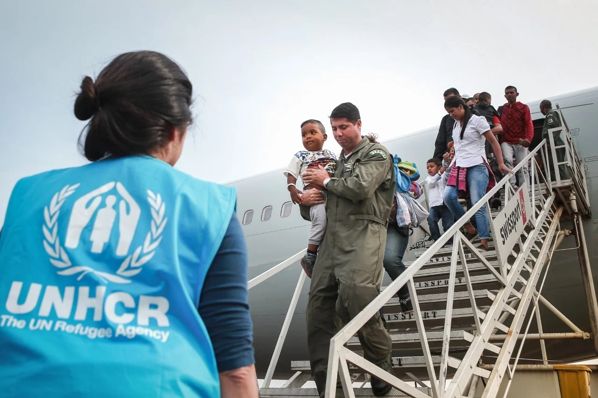
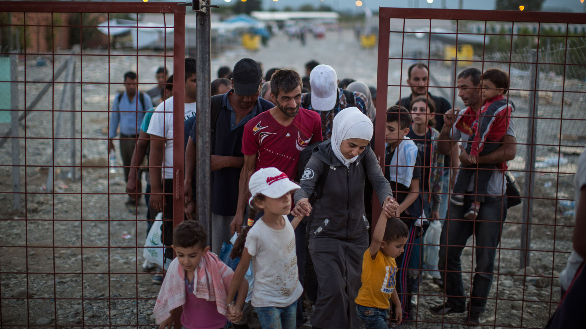

Comitê Nacional para os Refugiados (CONARE):
O CONARE facilita a implementação da política de asilo do Brasil, garantindo que ela cumpra os princípios de proteção internacional e a legislação nacional.
As atividades incluem:
- Desenvolvimento de Políticas: Criar e defender políticas públicas relativas aos refugiados, incluindo iniciativas destinadas a promover a integração social e económica.
A coordenação com outras agências governamentais, organizações sem fins lucrativos, organizações internacionais (como as Nações Unidas) e o público em geral é imperativa para garantir proteção e assistência eficazes aos refugiados.
- Monitoramento e Avaliação: Monitore a implementação de políticas e programas de segurança, avalie seu desempenho e recomende alterações conforme necessário.
Além disso, o CONARE tem a tarefa de garantir a segurança e a assistência aos refugiados no Brasil. Isso inclui:
- Direitos e Serviços: Garantir que os refugiados tenham acesso a direitos básicos como saúde, educação, emprego e assistência social.
- Integração: Ajudar os refugiados a fazerem parte da comunidade brasileira, facilitando sua adaptação e inclusão financeira na sociedade.
- Advocacia e Sensibilização: Realizar campanhas de sensibilização sobre a situação dos refugiados e tentar reduzir a xenofobia e a discriminação.
Oferecer conforto e apoio com empatia é essencial a pessoas que passam por situações de migrações e refúgios. Além disso, é fundamental oferecer suporte psicológico e emocional.
As pessoas em migração muitas vezes carregam diversos traumas e estresses emocionais. Ao fornecer serviços de aconselhamento e apoio psicológico, estamos oferecendo uma certa segurança para suas experiências e sentimentos. Ajudar também aqueles em transição e refúgio vai além de simplesmente fornecer recursos materiais ou serviços profissionais. É reconhecer sua pessoa, ouvir suas histórias e estar presente para oferecer apoio em todas as situações de suas jornadas.


Apoio psicológico:
Acre:
Segundo a secretaria, diversos projetos foram desenvolvidos no estado para dar atenção ao sofrimento mental e agravos ocasionados pela pandemia, como o “Saúde Emociona”, que realiza atendimento online com pessoas com Covid-19 e seus familiares, e o “Acovida”, que é focado em servidores da saúde.
Amapá:
A secretaria afirma que o governo do estado não criou nenhum serviço de atendimento psicológico em função da pandemia e que os atendimentos nessa área estão sendo ofertados normalmente no ambulatório do Hospital de Clínicas Alberto Lima, em Macapá.
Alagoas:
De acordo com a secretaria, além das unidades de saúde, as pessoas que moram no estado podem procurar o “Alô Saúde Mental”, programa que presta assistência psicológica às pessoas que desenvolveram transtornos mentais durante a pandemia.
Amazonas:
A secretaria afirma que os atendimentos psicológicos podem ser encontrados nas policlínicas estaduais e unidades municipais de saúde de forma presencial, por meio de agendamento. Os Centros de Atenção Integral à Criança e ao Adolescente (Caics) e Centros de Atenção Integral a Melhor Idade (Caimis) também ofertam serviços psicológicos para público a que se destina - respectivamente, crianças e idosos.
Bahia:
A secretaria afirma que a assistência da população em geral pelo SUS é feita nos CAPS. O atendimento psicológico disponibilizado pela Secretaria da Saúde do Estado é destinado a profissionais de saúde que atuam, principalmente, na linha de frente do combate à Covid-19.
Ceará:
A secretaria afirma que existem 156 CAPS (Centro de Atenção Psicossocial) no estado para tratamento psicológico e psiquiátrico. Além dos CAPS, também existe o Hospital de Saúde Mental Professor Frota Pinto, que é referência para pessoas que têm problemas de saúde mental.
Distrito Federal:
A secretaria afirma que o atendimento psicossocial é realizado nos CAPS, e que todas as informações sobre o serviço, bem como endereços e horários de funcionamento, podem ser consultadas no site do órgão.
Espírito Santo:
A secretaria afirma que, inicialmente, os pacientes devem ser atendidos e acompanhados nas UBSs. Os casos graves são encaminhados para os CAPS, que realizam o acompanhamento de transtornos mentais graves e persistentes.
Goiás:
A secretaria afirma que a Rede de Atenção Psicossocial de Goiás lida, prioritariamente, com as questões relacionadas à saúde mental advindas da pandemia da Covid-19 no estado, mas também possuem atendimentos psicológicos na unidade básica de saúde, CRAS, CREAS e CAPS. Os atendimentos psiquiátricos de urgências são regulados pelo Hospital Municipal e encaminhados para Goiânia.
Maranhão:
A secretaria afirma que oferece tratamento psicológico nas Policlínicas do Vinhais, Diamante e Cidade Operária, em São Luís, que contam com o serviço de psicologia clínica tanto para crianças e adolescentes, como para adultos e idosos.
Mato Grosso:
A secretaria afirma que uma pessoa que precise de ajuda psicológica deve procurar uma unidade de saúde porta aberta – como Postos de Saúde da Família ou Unidades de Pronto Atendimento – para fazer consultas ou exames
Caso seja necessário, ela será encaminhada para uma unidade especializada, como o Centro Integrado de Assistência Psicossocial (Ciaps), que dispõe das seguintes unidades: 1 (Hospital Adauto Botelho), 2 (Penitenciária Central) e 3 (Álcool e Outras Drogas)
Mato Grosso do Sul:
A secretaria afirma que os serviços SUS com atendimento psicológico e psiquiátrico são alguns ambulatórios especializados e CAPS - porém, os CAPS só atendem transtornos mentais de moderados a graves. A secretaria também afirma que algumas unidades básicas de saúde possuem atendimento psicológico.
Minas Gerais:
A secretaria informa que a Rede de Atenção Psicossocial do estado dispõe de serviços que realizam ações de saúde mental de âmbito individual e coletivo. A oferta de cuidado ocorre de acordo com a condição de saúde e necessidade do paciente e acontece nas UBSs e nos CAPS.
Os serviços funcionam de portas abertas, ou seja, a pessoa pode procurar as unidades de saúde do município para acolhimento sempre que necessitar.
Pará:
Segundo a secretaria, a pessoa em sofrimento mental pode ir diretamente tanto às UBSs, como aos CAPSs espalhados pelo estado. Ela também poderá passar por atendimento na Poli Metropolitana, em Belém, nas especialidades psiquiatria e psicologia a partir de 3 de maio - antes disso, o atendimento é exclusivo para pacientes com sintomas de Covid-19.
Paraíba:
A secretaria afirma que os atendimentos seguem sendo realizados nos CAPS, tanto para crianças, quanto para adultos. Os CAPS oferecem diversos tipos de atividades terapêuticas, como acompanhamento individual ou em grupo, oficinas terapêuticas, atividades comunitárias, atividades artísticas, orientação e acompanhamento do uso de medicação, atendimento domiciliar e aos familiares.
Porém, se a pessoa estiver em crise, ela pode ser socorrida pelo Serviços de Atendimento Móvel de Urgência (Samu), pela Unidade de Pronto Atendimento (UPA 24h) ou pode ser levada a um serviço de emergência psiquiátrica, como o Hospital de Clínicas Gaspar Vianna, em Belém.
Paraná:
Segundo a secretaria, as pessoas podem procurar atendimento conforme a disponibilidade e a organização de cada município, através dos CAPS e das unidades básicas. Além disso, os municípios organizaram atendimentos psicológicos gratuitos por telefone.
Em 2020, por conta da pandemia, o Paraná ofertou atendimento psicológico gratuito no aplicativo Telemedicina. Atualmente, o acolhimento psicológico pode ser realizado através do aplicativo “Saúde PROnline”.
Pernambuco:
Por causa da pandemia, a secretaria criou o serviço de tele acolhimento pelo “Atende em Casa” para pessoas que necessitam de suporte emocional. A iniciativa oferece escuta qualificada e, quando necessário, referencia o caso para serviços de psicologia e psiquiatria. Ele pode ser acessado através de um aplicativo para Android ou pelo site.
Piauí:
A secretaria afirma que as pessoas podem buscar atendimento tanto em UBSs quanto em CAPS. No caso das UBSs, os atendimentos são voltados para transtornos mentais mais leves; já no caso dos CAPs, para transtornos graves e persistentes.
Além disso, servidores do estado têm acesso a atendimento psicológico gratuito no Centro Integrado de Atenção ao Servidor (Ciaspi).
Rio Grande do Norte:
A secretaria afirma que a orientação é que todos os dispositivos que compõem a Rede de Atenção Psicossocial funcionem de porta aberta, ou seja, as pessoas que sintam necessidade de atendimento psicológico ou psiquiátrico possam se dirigir para qualquer unidade da rede.
Rio Grande do Sul:
A secretaria afirma que as pessoas devem procurar alguma das diferentes unidades que compõem a rede de atenção básica dos municípios, como postos de saúde, unidades de saúde da família, entre outros.
Nas situações em que é identificada necessidade de atendimento especializado em saúde mental, os usuários são direcionados para o cuidado compartilhado com dispositivos de maior complexidade, como as Equipes Multiprofissionais de Atenção Especializada em Saúde Mental (AMENT) e os CAPS.
Rondônia:
A secretaria afirma que os CAPS seguem funcionando durante a pandemia. Estão sendo feitas escutas e suporte psicológico, mas sem atendimento psicoterápico contínuo. A orientação é que as pessoas procurem faculdades e universidades que oferecem terapia gratuita de forma presencial ou online.
Além disso, a Policlínica Osvaldo Cruz reabriu no mês de abril o Ambulatório de Psiquiatria e os atendimentos para os servidores.
Roraima:
As unidades de saúde que disponibilizam o serviço de assistência psicológica são: Clínica Médica Especializada Coronel Mota, CAPS III (Centros de Atenção Psicossocial) e o CAPS AD III (Centro de Atenção Psicossocial para Álcool e outras Drogas).
Santa Catarina:
A secretaria afirma que o atendimento deve ser centralizado na Atenção Primária à Saúde, que é a principal porta de entrada do SUS (UBS e outras unidades de saúde semelhantes). Por isso, segundo o órgão, às equipes destas unidades cabe a função de ser a estrutura ordenadora do atendimento e, portanto, se articular com os demais pontos de atenção da Rede de Atenção Psicossocial do estado, na qual incluem-se os CAPS, as Equipes Multiprofissionais Especializadas em Saúde Mental, entre outros dispositivos
São Paulo:
Em fevereiro deste ano, a secretaria lançou o “Programa Autoestima”, um serviço de acolhimento psicológico virtual. O programa oferece cursos de capacitação a profissionais de saúde do SUS na área de saúde mental e também faz acolhimento psicossocial de cidadãos. Quando necessário, o paciente recebe encaminhamento às unidades de saúde para continuidade do atendimento.
No primeiro acesso à plataforma, é preciso preencher um cadastro e responder um questionário. Depois disso, é criado um login e senha de acesso pessoal, que serão necessários para agendamento do acolhimento online. Após se cadastrar, o paciente pode acessar a plataforma, consultar a agenda e reservar um horário.
Além disso, o paciente que precisar de atendimento na área de saúde mental deve procurar a UBS mais próxima de sua residência, uma vez que este tipo de serviço é a “porta de entrada” do SUS e deve providenciar os encaminhamentos a serviços especializados, como os CAPS, conforme a necessidade.
Sergipe:
A secretaria informa que a população deve procurar as secretarias municipais de saúde de seus municípios para se informar sobre serviços e unidades de saúde que prestam atendimento sobre saúde mental.
Tocantins:
A secretaria afirma que possui uma rede de atendimentos psicossociais que está apta a realizar atendimento psicológico e psiquiátrico pelo SUS. O estado possui CAPS em todas as oito regiões de saúde do Tocantins.
Os municípios de Palmas e Araguaína possuem atendimentos exclusivos para transtornos em virtude da pandemia. Nos demais serviços, na rede de Atenção Básica, os psicólogos ficam à disposição da população, além das equipes multiprofissionais dos serviços.
A secretaria também possui um serviço para atendimento dos profissionais de saúde por meio do “Projeto Psicologia Online”. O projeto conta com uma equipe de dez psicólogos para realizar o atendimento remoto por meio de agendamento via telefone.